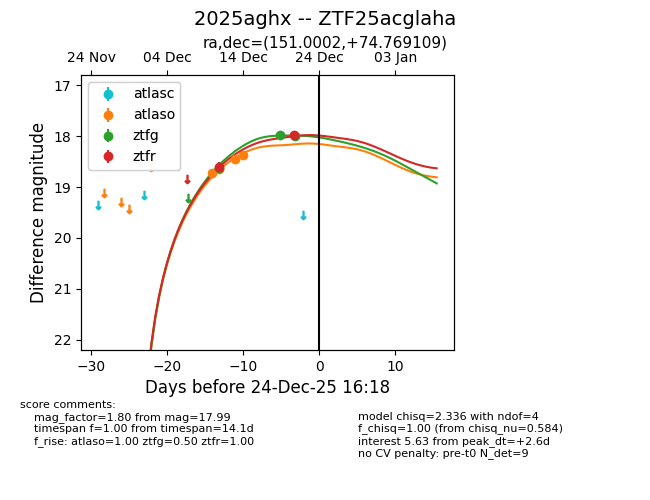
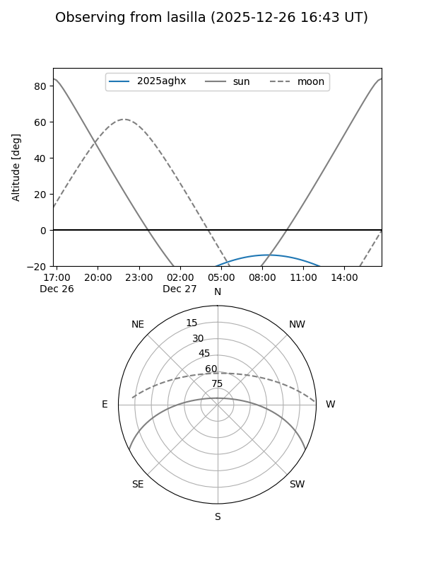
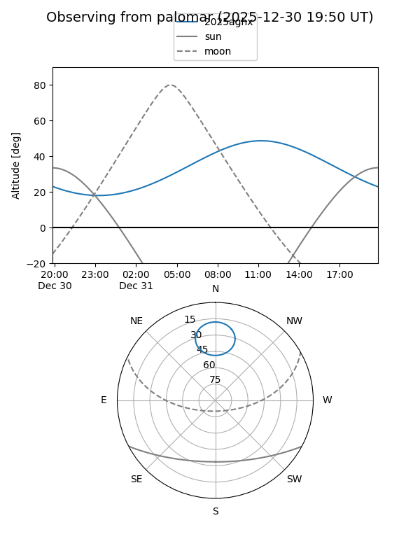
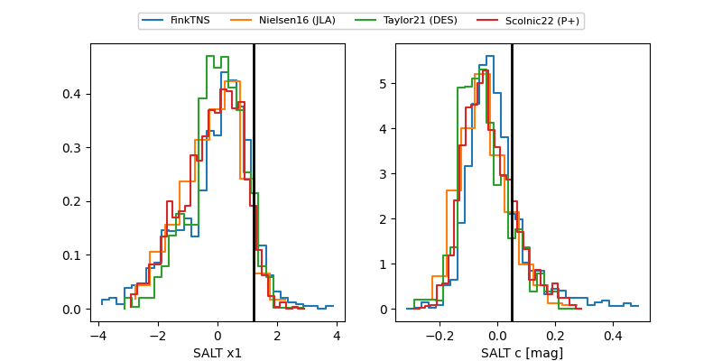

2025aghx
Target 2025aghx at 2025-12-30 16:42
Aliases and brokers:
FINK: fink-portal.org/ZTF25acglaha
Lasair: lasair-ztf.lsst.ac.uk/objects/ZTF25acglaha
ALeRCE: alerce.online/object/ZTF25acglaha
TNS: wis-tns.org/object/2025aghx
YSE: ziggy.ucolick.org/yse/transient_detail/2025aghx
alt names
ZTF25acglaha (ztf,fink_ztf)
2025aghx (tns,yse)
Coordinates:
equatorial (ra, dec) = 151.0002,+74.76911
equatorial (HMS+DMS) = 10:04:00.05,+74:46:08.79
galactic (l, b) = (135.7658,+37.88688)
Flags:
Photometry:
last atlasc=18.13, atlaso=18.28, ztfg=18.27, ztfr=17.98
2 atlasc, 5 atlaso, 4 ztfg, 2 ztfr detections
Lightcurve

Visibility


Additional plots
